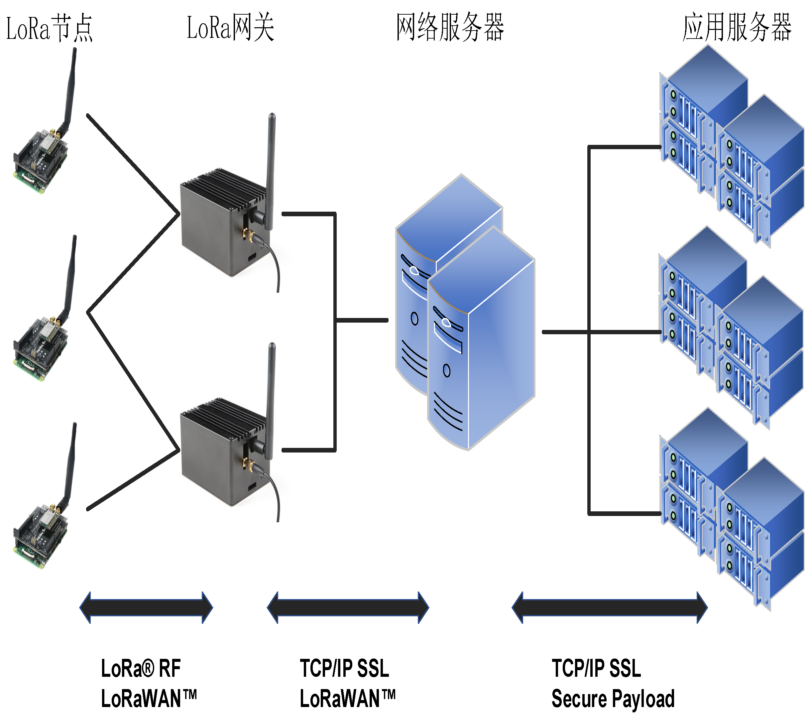

LoRa低功耗广域网¶
“LoRa是什么？”
要想准确地回答这一问题，绝非一件易事。 因为LoRa这个词所指代的并非一件单一的事物，恰恰相反，它包含了至少三层概念：
- 狭义上的LoRa指的是一种物理层的信号调制方式：它基于线性扩频技术（Chirp Spreading Spectrum，CSS），将射频信号调制为具有不同起始频率的chirp符号，以此编码不同的数据。
- 从系统角度看，LoRa也指由终端节点、网关、网络服务器、应用服务器所组成的一种网络系统架构：LoRa定义了不同设备在系统中的分工与作用，规定了数据在系统中流动与汇聚的方式。
- 从应用角度看，LoRa为物联网应用提供了一种低成本、低功耗、远距离的数据传输服务：LoRa在使用10mW射频输出功率的情况下，可以提供超过25km视线传输距离，从而支持大量广域低功耗物联网应用。
为了帮助读者建立对LoRa完整的认识，本节剩余部分将从LoRa应用、LoRa系统架构、LoRa物理层调制技术三个方面，自顶向下地对LoRa进行介绍。
LoRa应用¶
LoRa作为目前广泛使用的低功耗广域网技术(LPWAN)，为低功耗物联网设备提供了可靠的连接方案。如图\ref{fig:lpwan}所示，相比于Wi-Fi、蓝牙、ZigBee等传统无线局域网，LoRa可以实现更远距离的通信，有效扩展了网络的覆盖范围；而相比于移动蜂窝网络，LoRa具有更低的硬件部署成本和更长的节点使用寿命，单个LoRa节点可以在电池供电的情况下连续工作数年。LoRa具有低数据率、远距离和低功耗的性质，因此非常适合与室外的传感器及其他物联网设备进行通信或数据交互。

考虑到LoRa在覆盖距离、部署成本等方面的巨大优势，近年来LoRa在全球范围内进行了大量的应用部署，在水质监测、火灾预警、智慧路灯等众多物联网场景中都可以看到LoRa的身影。例如在北美的Apana项目中，工程人员将LoRa通信模块与传统的水质传感器进行连接，从而使用户可以数十公里外远程监控饮用水在输送过程中的水质变化情况。而在荷兰的KPN项目中，工程人员通过广泛部署LoRa网关，实现在荷兰全域范围内的LoRa网络全覆盖，为智慧运输、智能农业、智慧路灯等具体应用提供了通信支持。
LoRa架构¶
LoRa也指一种由节点、网关及服务器所组成的网络系统架构，各部分的关系如图\ref{fig:arch}所示。LoRa节点与网关之间采用单跳直接连接，这一阶段的物理层使用线性扩频调制，MAC层通常使用LoRaWAN协议。网关收到数据包后，对数据包信号进行解码，并将解码结果通过蜂窝或有线网络传输给网络服务器，这一阶段使用传统的TCP/IP进行传输，同时网络服务器与网关之间的交互仍然遵守LoRaWAN协议。网络服务器汇总多个网关的数据，过滤重复的数据包，执行安全检查，并根据内容将数据发送至不同的应用服务器，供用户读取和使用，这一阶段也使用TCP/IP和SSL进行传输和加密。

可以看到LoRa网络的系统架构主要由LoRaWAN定义，因此本节剩余部分将详细介绍LoRaWAN协议的内容。
LoRaWAN¶
LoRaWAN是由LoRa联盟在LoRa物理层编码技术的基础上提出的MAC层协议，由LoRa联盟负责维护。LoRaWAN规范1.0版本于2015年6月发布。LoRaWAN协议主要规定了节点与网关、网关与服务器之间的连接规范，确定了LoRa网络的星型拓扑结构。受LoRa节点成本和能耗的限制，现有的LoRaWAN协议基本采用纯ALOHA机制，即节点在发送数据前不进行载波侦听，而是随机选择时间进行发送。一方面，LoRaWAN协议的简单性有助于降低节点能耗，延长节点的使用寿命；但另一方面，过于简单的介质访问控制机制也加剧了LoRa网络的信号冲突问题。
LoRaWAN定义了网络的通信协议和系统架构，还负责管理所有设备的通信频率，数据速率和功率。 在LoRaWAN的控制下，网络中的所有设备可以是异步的，并在只有可用数据时进行传输。 针对不同的应用场景，LoRaWAN定义了三种节点运行模式，分别是Class A（ALL）、Class B（Beacon）、Class C（Continuously Listening）： - Class A模式主要提供低功耗上行连接，处于Class A模式的节点可以在任意时间发起上行传输，并只在传输结束时打开两个下行接收窗口，此时接收来自网关ACK。Class A模式下，网关无法主动连接到节点，当无数据传输时，节点处于休眠状态，因此该模式下节点能耗最低。 - Class B模式提供节点与网关的周期性连接，该模式下网关节点周期性向节点广播信标帧，保持节点与网关的时间同步。 - Class C模式提供节点与网关的持续性连接，该模式下节点始终处于唤醒状态，因此能耗最高。 三种网络模式中，Class A是所有LoRa网络都必须支持的模式，也是最常用的网络模式。
LoRa物理层¶
LoRa物理层使用线性扩频技术，即通过信号调频，将信号调制为频率随时间线性变化的chirp符号。 根据频率随时间变化的趋势不同，chirp符号可以分为up-chirp和down-chirp，如图\ref{fig:chirp}所示。up-chirp从最低频率开始，随时间增加逐渐上升至最高频率。而down-chirp则与之相反，从最高频率逐渐下降至最低频率。LoRa定义最高频率和最低频率之间的差值为LoRa带宽，记作BW。chirp符号天然具有抗噪声、抗多径和抗多普勒效应等特点，因此LoRa信号可以支持远距离传输，在超低信噪比情况下也能被正常解码。

LoRa通过对基准up-chirp做循环频移来编码不同的数据。如图\ref{fig:chirp}所示，基准up-chirp的最低频率为-\frac{BW}{2}，最高频率为\frac{BW}{2}，信号长度为T。因此其频率可以表示为f(t)=kt-\frac{BW}{2}，其中k=\frac{BW}{T}表示扫频梯度。由此，基准up-chirp可以表示为： $$ C(t)=e^{j2\pi(-\frac{BW}{2}+kt)\times t} $$
当需要编码数据时，LoRa首先令基准up-chirp乘上一个固定频率的偏移分量，偏移后的信号可以表示为C(t)e^{j2\pi ft}。随后，LoRa将所有频率高于\frac{BW}{2}的信号段循环频移至-\frac{BW}{2}频率处，频移后的信号如图\ref{fig:decoder}(e)所示。LoRa定义了N种不同的偏移频率，因此通过对一个基准up-chirp进行循环频移，最多可以编码SF=log_2N比特数据。
LoRa数据解码由频率解扩频和傅里叶变换两个步骤组成。对于一个收到的数据包，LoRa首先令数据包中每个编码的up-chirp与基准down-chirp相乘。与up-chirp类似，基准down-chirp可以表示为： $$ C*(t)=e{j2\pi(\frac{BW}{2}-kt)\times t} $$ 显然C^*(t)是C(t)的共轭，因此编码up-chirp与基准down-chirp相乘的结果是一个单频信号，其频率等于编码up-chirp的频率偏移量： $$ C^*(t)\times C(t)e^{j2\pi ft}=e^{j2\pi ft} $$ 随后，LoRa对式(2.3)得到的单频信号进行傅里叶变换，将时域信号转化为频域波峰，波峰的下标即对应信号编码的数据，LoRa解码流程如图\ref{fig:decoder}所示。

LoRa数据包的结构如图\ref{fig:struct}所示，一个典型的LoRa数据包包括4个部分：S_{pre}个前导码(Preamble)，2个强制同步字(Mandatory Sync Word, MSW)，2.25个起始帧分界符(Start Frame Delimiter, SFD)和若干编码up-chirp(Data Payload)。 前导码由连续的基准up-chirp组成，主要用于数据包的检测和同步； 强制同步字编码了数据包的网络号信息，接收端根据该信息判断是否接收当前数据包； 起始帧分界符标志着数据段的开始，在分界符之后，就是连续的编码up-chirp。

参考文献¶
- [1] Martin C. Bor, Utz Roedig, Thiemo Voigt, and Juan M. Alonso. Do lora low-power wide-area networks scale? In Proceedings of ACM MSWiM, 2016.
- [2] Thiemo Voigt, Martin C. Bor, Utz Roedig, and Juan M. Alonso. Mitigating inter-network interference in lora networks. In Proceedings of ACM EWSN, 2017.
- [3] Martin C. Bor and Utz Roedig. Lora transmission parameter selection. In Proceedings of IEEE DCOSS, 2017.
- [4] Erbati Mohammad Mohammadi, Schiele Gregor, and Batke Gerd. Analysis of lorawan technology in an outdoor and an indoor scenario in duisburg-germany. In Proceedings of IEEE ICCCS, 2018.
- [5] Silvia Demetri, Marco Zúñiga, Gian Pietro Picco, Fernando Kuipers, Lorenzo Bruzzone, and Thomas Telkamp. Automated estimation of link quality for lora: a remote sensing approach. In Proceedings of ACM IPSN, 2019.
- [6] Juha Petäjäjärvi, Konstantin Mikhaylov, Antti Roivainen, Tuomo Hänninen, and Marko Pettissalo. On the coverage of lpwans: range evaluation and channel attenuation model for lora technology. In Proceedings of IEEE ITST, 2015.
- [7] Jansen Christian Liando, Amalinda Gamage, Agustinus W. Tengourtius, and Mo Li. Known and unknown facts of lora: Experiences from a large-scale measurement study. ACM Transactions on Sensor Networks (TOSN), 2019.
- [8] LoRa Alliance. What is lorawan:a technical overview of lora and lorawan. White Paper, 2018.